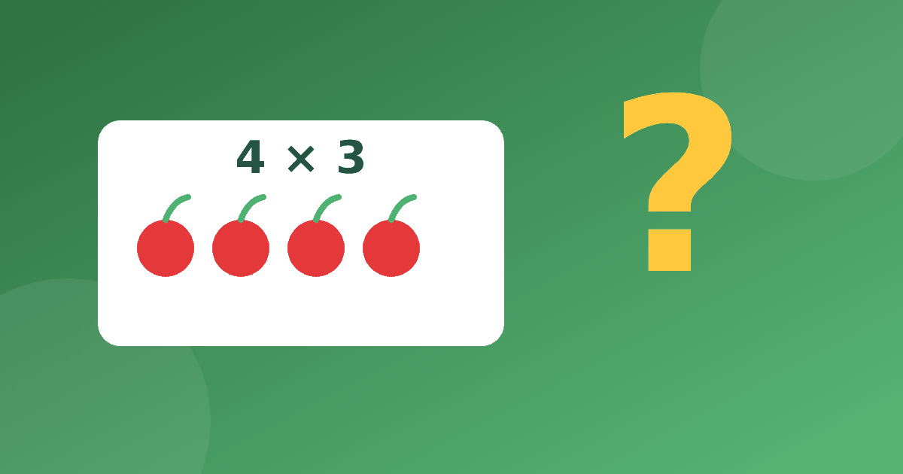

Учим ребёнка понимать условие: умножение в задачах

Ребёнок может уверенно отвечать на примеры, но теряться, когда те же числа спрятаны в тексте. Это нормально. Задачи на умножение 2 класс обычно вводят вскоре после самой таблицы, и главная трудность здесь не в счёте, а в том, чтобы понять, о чём спрашивают. Разберём, как помочь без нажима.
С чего начинается задача
Умножение в школе начинается с сложения одинаковых слагаемых. Запись 4 + 4 + 4 = 12 можно сократить до 4 × 3 = 12. Если ребёнок хорошо понимает эту связь, задача становится понятнее. Фраза «по четыре в каждом из трёх» превращается в знакомое выражение.
Поэтому перед первыми текстами проверьте, умеет ли ребёнок заменять сумму одинаковых чисел умножением и обратно. Если нет, вернитесь к картинкам и рядам предметов.
Для проверки хватит коротких устных вопросов. Спросите, как записать 5 + 5 + 5 + 5 умножением, и получите 5 × 4 = 20. Затем попросите обратное, как расписать 7 × 3 суммой, то есть 7 + 7 + 7 = 21.
Как решать задачи на умножение по шагам
Научите ребёнка одному и тому же порядку, чтобы он не гадал. Вот спокойная последовательность.
- Прочитать условие целиком, не пытаясь сразу считать.
- Пересказать своими словами, что известно и о чём спрашивают.
- Нарисовать схему или предметы, а не цифры.
- Записать выражение и вычислить.
- Записать ответ с названием предметов и проверить, подходит ли он по смыслу.
Возьмём пример. «В трёх коробках лежит по 6 карандашей. Сколько всего карандашей?» Ребёнок рисует три коробки, в каждой шесть чёрточек. Видит три группы по шесть. Записывает 6 × 3 = 18 и отвечает, что всего 18 карандашей. Проверить можно сложением, потому что 6 + 6 + 6 = 18.
Виды текстовых задач на умножение
Текстовые задачи на умножение во втором классе, как правило, бывают нескольких видов. Полезно показать ребёнку каждый на отдельном примере.
Первый вид — нахождение общего количества, как в примере с коробками. Второй вид — увеличение в несколько раз. Например, у Пети 4 машинки, а у Коли в 3 раза больше. Значит, у Коли 4 × 3 = 12 машинок. Третий вид связан с делением. На тарелках разложили 15 конфет по 5 штук, сколько понадобилось тарелок? Тут нужно 15 разделить на 5, получится 3. Как умножение и деление связаны, объясняет статья про деление как обратное действие.
Где ребёнок ошибается
Сначала разберите причину, а потом исправляйте. Чаще всего встречаются такие случаи.
- Ребёнок складывает числа из условия, потому что видит слово «всего».
- Он берёт любые два числа и умножает, не думая о смысле.
- Забывает записать, в чём измеряется ответ.
- Путает, что нужно найти, в задачах на «больше в несколько раз» и «больше на несколько».
Не поправляйте ответ сразу. Спросите, что ребёнок нарисовал и что означает каждое число. Часто он сам замечает несоответствие.
Задачи для самостоятельного разбора
Дайте ребёнку три коротких условия и попросите сначала нарисовать, потом посчитать, а в конце проверить сложением.
- На каждой из 5 полок стоит по 4 книги. Сколько книг на полках? Правильный ответ 20 книг, потому что 4 × 5 = 20, а 4 + 4 + 4 + 4 + 4 тоже равно 20.
- В одном пакете 3 яблока. Сколько яблок в 7 пакетах? Здесь 3 × 7 = 21 яблоко.
- У Маши 8 наклеек, а у Оли в 2 раза больше. Сколько наклеек у Оли? Получается 8 × 2 = 16 наклеек.
Если ребёнок читает медленно, читайте условие вместе вслух. Часто ошибка возникает не из-за счёта, а из-за невнимательного чтения.
Проверяйте ответ на здравый смысл. Если в трёх коробках по шесть карандашей ребёнок получил 9, спросите, может ли в трёх коробках лежать меньше карандашей, чем в двух. Такой вопрос возвращает к смыслу и помогает заметить, что числа были сложены, а не перемножены.
Что делать дома
Лучше решать по одной-две задачи, чем целую страницу. Придумывайте свои истории из жизни, например про яйца в упаковках или ножки у стульев. Так математика становится ближе, а ещё в игровой форме её можно потренировать, используя идеи из статьи про игры для 1 и 2 класса.
Скорость счёта тоже важна. Если примеры из таблицы даются долго, ребёнок устаёт и теряет нить задачи. Поэтому параллельно закрепляйте сами факты, например в тренажёре, где нет таймеров на вопросах и рекламы. Начинать можно с самых простых, как в материале про таблицу умножения на 2 и 3.
Главное правило такое. Пусть ребёнок объясняет вам, что происходит в задаче, а не угадывает действие. Если он объяснил правильно, ошибка в вычислении уже не страшна.